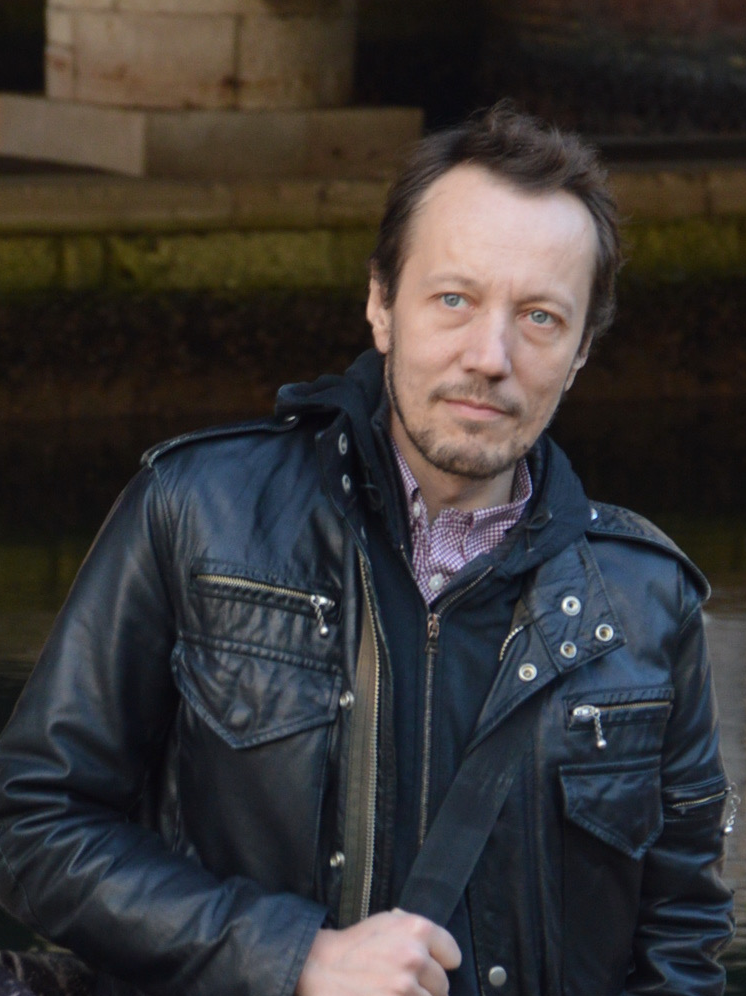

Piero Stanig

I am an Associate Professor of Political Science (with tenure) at Bocconi University in Milan, Italy. I am also the Director of the Bachelor in International Politics and Government (BIG) and of the Bocconi–HEC Double Program in Data, Society and Organisations (DSO). During the calendar years 2022, 2023 and 2024 I was on leave from Bocconi, and a Visiting Associate Professor at Yale-NUS College and in the Department of Political Science at NUS.
My research agenda spans comparative politics and political economy, and my work has appeared or is in press in the Proceedings of the National Academy of Sciences, Nature Climate Change, Journal of Public Economics, Electoral Studies, the American Political Science Review, the Journal of Economic Perspectives, the Journal of Politics, Comparative Political Studies, and the American Journal of Political Science, among others. I received my Ph.D. in Political Science from Columbia University. My Erdős Number is at most 5.
I am a member of the Scientific Committee of the Fondazione Roberto Franceschi; and was a member of the editorial board of the Journal of Politics. I was also a member of the Advisory Council of the Ibrahim Index of African Governance for many years. The methodology currently adopted by the Transparency International Corruption Perceptions Index is based on the advice Andrew Gelman and I were commissioned to provide.
My recent work focuses on two themes: the politics of the globalization backlash and in general the political consequences of structural economic changes; and the material drivers of environmental concern and environmentalist voting behavior. My papers with Italo Colantone on the political consequences of globalization in advanced democracies are currently the most cited papers among those published since 2018 in the American Political Science Review and in the past 5 years in the American Journal of Political Science. My work has received considerable attention in the international media and is required reading in syllabi in top universities across the world.
I am the recipient (with Massimo Anelli and Italo Colantone) of a CARIPLO Foundation grant to study how trade unions mediate the economic and political consequences of automation and robotization in manufacturing.
My book in Italian, Fallimento Lockdown, with Gianmarco Daniele, was published in September 2021, and (as of the end of 2021) has been among the best-selling trade books in the "political science" and "economics" ctegories on Amazon.it in the past few months.
Before moving to Bocconi, I taught methodology, political science, and political economy at the LSE and at Hertie in Berlin. I was a doctoral fellow at the Alexander Hamilton Center for Political Economy at NYU, where I taught courses on political and bureaucratic corruption.
Department of Social and Political Sciences, Bocconi University
piero.stanig (at) gmail.com
piero.stanig (at) unibocconi.it
Twitter: @PStanig